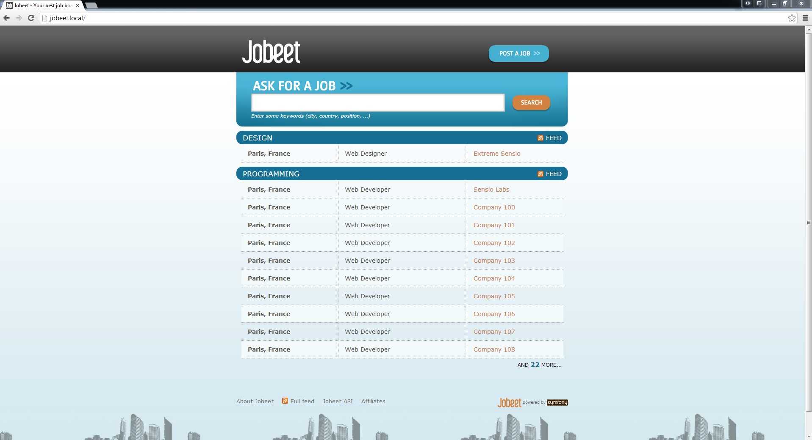

26. Day 7: Playing with the Category page¶
- This article is part of the original Jobeet Tutorial, created by Fabien Potencier, for Symfony 1.4.
Today we will make the Category page like it is described in the second day’s requirements:
“The user sees a list of all the jobs from the category sorted by date and paginated with 20 jobs per page“
26.1. The Category Route¶
First, we need to add a route to define a pretty URL for the category page. Add it at the beginning of the routing file:
src/Ibw/JobeetBundle/Resources/config/routing.yml
# ...
IbwJobeetBundle_category:
pattern: /category/{slug}
defaults: { _controller: IbwJobeetBundle:Category:show }
To get the slug of a category we need to add the getSlug() method to our category class:
src/Ibw/JobeetBundle/Entity/Category.php
use Ibw\JobeetBundle\Utils\Jobeet;
class Category
{
// ...
public function getSlug()
{
return Jobeet::slugify($this->getName());
}
}
26.2. The Category Link¶
Now, edit the index.html.twig template of the job controller to add the link to the category page:
src/Ibw/JobeetBundle/Resources/views/Job/index.html.twig
<!-- some HTML code -->
<h1><a href="{{ path('IbwJobeetBundle_category', { 'slug': category.slug }) }}">{{ category.name }}</a></h1>
<!-- some HTML code -->
</table>
{% if category.morejobs %}
<div class="more_jobs">
and <a href="{{ path('IbwJobeetBundle_category', { 'slug': category.slug }) }}">{{ category.morejobs }}</a>
more...
</div>
{% endif %}
</div>
{% endfor %}
</div>
{% endblock %}
In the template above we used category.morejobs, so let’s define it:
src/Ibw/JobeetBundle/Entity/Category.php
class Category
{
// ...
private $more_jobs;
// ...
public function setMoreJobs($jobs)
{
$this->more_jobs = $jobs >= 0 ? $jobs : 0;
}
public function getMoreJobs()
{
return $this->more_jobs;
}
}
The more_jobs property will hold the number of active jobs for the category minus the number of jobs listed on the homepage. Now, in JobController, we need to set the more_jobs value for each category:
src/Ibw/JobeetBundle/Controller/JobController.php
public function indexAction()
{
$em = $this->getDoctrine()->getManager();
$categories = $em->getRepository('IbwJobeetBundle:Category')->getWithJobs();
foreach($categories as $category)
{
$category->setActiveJobs($em->getRepository('IbwJobeetBundle:Job')->getActiveJobs($category->getId(), $this->container->getParameter('max_jobs_on_homepage')));
$category->setMoreJobs($em->getRepository('IbwJobeetBundle:Job')->countActiveJobs($category->getId()) - $this->container->getParameter('max_jobs_on_homepage'));
}
return $this->render('IbwJobeetBundle:Job:index.html.twig', array(
'categories' => $categories
));
}
The countActiveJobs function has to be added to the JobRepository:
src/Ibw/JobeetBundle/Repository/JobRepository.php
// ...
public function countActiveJobs($category_id = null)
{
$qb = $this->createQueryBuilder('j')
->select('count(j.id)')
->where('j.expires_at > :date')
->setParameter('date', date('Y-m-d H:i:s', time()));
if($category_id)
{
$qb->andWhere('j.category = :category_id')
->setParameter('category_id', $category_id);
}
$query = $qb->getQuery();
return $query->getSingleScalarResult();
}
// ...
Now you should see the result in your browser:
26.3. Category Controller Creation¶
It’s now time to create the Category controller. Create a new CategoryController.php file in your Controller directory:
src/Ibw/JobeetBundle/Controller/CategoryController.php
<?php
namespace Ibw\JobeetBundle\Controller;
use Symfony\Bundle\FrameworkBundle\Controller\Controller;
use Ibw\JobeetBundle\Entity\Category;
/**
* Category controller
*
*/
class CategoryController extends Controller
{
}
We could use the doctrine:generate:crud command like we did for the job controller, but we won’t need 90% of the generated code, so we can just create a new controller from scratch.
26.4. Update the Database¶
We need to add a slug column for the category table and lifecycle callbacks for setting this column value:
src/Ibw/JobeetBundle/Resources/config/doctrine/Category.orm.yml
Ibw\JobeetBundle\Entity\Category:
type: entity
repositoryClass: Ibw\JobeetBundle\Repository\CategoryRepository
table: category
id:
id:
type: integer
generator: { strategy: AUTO }
fields:
name:
type: string
length: 255
unique: true
slug:
type: string
length: 255
unique: true
oneToMany:
jobs:
targetEntity: Job
mappedBy: category
manyToMany:
affiliates:
targetEntity: Affiliate
mappedBy: categories
lifecycleCallbacks:
prePersist: [ setSlugValue ]
preUpdate: [ setSlugValue ]
Remove from the Category entity (src/Ibw/JobeetBundle/Entity/Category.php) the getSlug method we created earlier and run the doctrine command to update the Category entity class:
$ php app/console doctrine:generate:entities IbwJobeetBundle
Now you should have the following added to Category.php:
src/Ibw/JobeetBundle/Entity/Category.php
// ...
/**
* @var string
*/
private $slug;
/**
* Set slug
*
* @param string $slug
* @return Category
*/
public function setSlug($slug)
{
$this->slug = $slug;
return $this;
}
/**
* Get slug
*
* @return string
*/
public function getSlug()
{
return $this->slug;
}
Change the setSlugValue() function:
src/Ibw/JobeetBundle/Entity/Category.php
// ...
class Category
{
// ...
public function setSlugValue()
{
$this->slug = Jobeet::slugify($this->getName());
}
}
Now we have to drop the database and create it again with the new Category column and load the fixtures:
$ php app/console doctrine:database:drop --force
$ php app/console doctrine:database:create
$ php app/console doctrine:schema:update --force
$ php app/console doctrine:fixtures:load
26.5. Category Page¶
We have now everything in place to create the showAction() method. Add the following code to the CategoryController.php file: src/Ibw/JobeetBundle/Controller/CategoryController.php
// ...
public function showAction($slug)
{
$em = $this->getDoctrine()->getManager();
$category = $em->getRepository('IbwJobeetBundle:Category')->findOneBySlug($slug);
if (!$category) {
throw $this->createNotFoundException('Unable to find Category entity.');
}
$category->setActiveJobs($em->getRepository('IbwJobeetBundle:Job')->getActiveJobs($category->getId()));
return $this->render('IbwJobeetBundle:Category:show.html.twig', array(
'category' => $category,
));
}
// ...
The last step is to create the show.html.twig template:
src/Ibw/JobeetBundle/Resources/views/Category/show.html.twig
{% extends 'IbwJobeetBundle::layout.html.twig' %}
{% block title %}
Jobs in the {{ category.name }} category
{% endblock %}
{% block stylesheets %}
{{ parent() }}
<link rel="stylesheet" href="{{ asset('bundles/ibwjobeet/css/jobs.css') }}" type="text/css" media="all" />
{% endblock %}
{% block content %}
<div class="category">
<div class="feed">
<a href="">Feed</a>
</div>
<h1>{{ category.name }}</h1>
</div>
<table class="jobs">
{% for entity in category.activejobs %}
<tr class="{{ cycle(['even', 'odd'], loop.index) }}">
<td class="location">{{ entity.location }}</td>
<td class="position">
<a href="{{ path('ibw_job_show', { 'id': entity.id, 'company': entity.companyslug, 'location': entity.locationslug, 'position': entity.positionslug }) }}">
{{ entity.position }}
</a>
</td>
<td class="company">{{ entity.company }}</td>
</tr>
{% endfor %}
</table>
{% endblock %}
26.6. Including Other Twig Templates¶
Notice that we have copied and pasted the tag that create a list of jobs from the job index.html.twig template. That’s bad. When you need to reuse some portion of a template, you need to create a new twig template with that code and include it where you need. Create the list.html.twig file:
src/Ibw/JobeetBundle/Resources/views/Job/list.html.twig
<table class="jobs">
{% for entity in jobs %}
<tr class="{{ cycle(['even', 'odd'], loop.index) }}">
<td class="location">{{ entity.location }}</td>
<td class="position">
<a href="{{ path('ibw_job_show', { 'id': entity.id, 'company': entity.companyslug, 'location': entity.locationslug, 'position': entity.positionslug }) }}">
{{ entity.position }}
</a>
</td>
<td class="company">{{ entity.company }}</td>
</tr>
{% endfor %}
</table>
You can include a template by using the include function. Replace the HTML <table> code from both templates with the mentioned function:
src/Ibw/JobeetBundle/Resources/views/Job/index.html.twig
{{ include ('IbwJobeetBundle:Job:list.html.twig', {'jobs': category.activejobs}) }}
src/Ibw/JobeetBundle/Resources/views/Category/show.html.twig
{{ include ('IbwJobeetBundle:Job:list.html.twig', {'jobs': category.activejobs}) }}
26.7. List Pagination¶
At the moment of writing this, Symfony2 doesn’t provide any good pagination tools out of the box so to solve this problem we will use the old classic method. First, let’s add a page parameter to the IbwJobeetBundle_category route. The page parameter will have a default value of 1, so it will not be required:
src/Ibw/JobeetBundle/Resources/config/routing.yml
IbwJobeetBundle_category:
pattern: /category/{slug}/{page}
defaults: { _controller: IbwJobeetBundle:Category:show, page: 1 }
# ...
Clear the cache after modifying the routing file:
$ php app/console cache:clear --env=dev
$ php app/console cache:clear --env=prod
The number of jobs on each page will be defined as a custom parameter in the app/config/config.yml file:
app/config/config.yml
# ...
parameters:
max_jobs_on_homepage: 10
max_jobs_on_category: 20
Change the JobRepository getActiveJobs method to include an $offset parameter to be used by doctrine when retrieving jobs:
src/Ibw/JobeetBundle/Repository/JobRepository.php
// ...
public function getActiveJobs($category_id = null, $max = null, $offset = null)
{
$qb = $this->createQueryBuilder('j')
->where('j.expires_at > :date')
->setParameter('date', date('Y-m-d H:i:s', time()))
->orderBy('j.expires_at', 'DESC');
if($max)
{
$qb->setMaxResults($max);
}
if($offset)
{
$qb->setFirstResult($offset);
}
if($category_id)
{
$qb->andWhere('j.category = :category_id')
->setParameter('category_id', $category_id);
}
$query = $qb->getQuery();
return $query->getResult();
}
//
Change the CategoryController showAction to the following:
src/Ibw/JobeetBundle/Controller/CategoryController.php
public function showAction($slug, $page)
{
$em = $this->getDoctrine()->getManager();
$category = $em->getRepository('IbwJobeetBundle:Category')->findOneBySlug($slug);
if (!$category) {
throw $this->createNotFoundException('Unable to find Category entity.');
}
$total_jobs = $em->getRepository('IbwJobeetBundle:Job')->countActiveJobs($category->getId());
$jobs_per_page = $this->container->getParameter('max_jobs_on_category');
$last_page = ceil($total_jobs / $jobs_per_page);
$previous_page = $page > 1 ? $page - 1 : 1;
$next_page = $page < $last_page ? $page + 1 : $last_page;
$category->setActiveJobs($em->getRepository('IbwJobeetBundle:Job')->getActiveJobs($category->getId(), $jobs_per_page, ($page - 1) * $jobs_per_page));
return $this->render('IbwJobeetBundle:Category:show.html.twig', array(
'category' => $category,
'last_page' => $last_page,
'previous_page' => $previous_page,
'current_page' => $page,
'next_page' => $next_page,
'total_jobs' => $total_jobs
));
}
Finally, let’s update the template
src/Ibw/JobeetBundle/Resources/views/Category/show.html.twig
{% extends 'IbwJobeetBundle::layout.html.twig' %}
{% block title %}
Jobs in the {{ category.name }} category
{% endblock %}
{% block stylesheets %}
{{ parent() }}
<link rel="stylesheet" href="{{ asset('bundles/ibwjobeet/css/jobs.css') }}" type="text/css" media="all" />
{% endblock %}
{% block content %}
<div class="category">
<div class="feed">
<a href="">Feed
</a>
</div>
<h1>{{ category.name }}</h1>
</div>
{{ include ('IbwJobeetBundle:Job:list.html.twig', {'jobs': category.activejobs}) }}
{% if last_page > 1 %}
<div class="pagination">
<a href="{{ path('IbwJobeetBundle_category', { 'slug': category.slug, 'page': 1 }) }}">
<img src="{{ asset('bundles/ibwjobeet/images/first.png') }}" alt="First page" title="First page" />
</a>
<a href="{{ path('IbwJobeetBundle_category', { 'slug': category.slug, 'page': previous_page }) }}">
<img src="{{ asset('bundles/ibwjobeet/images/previous.png') }}" alt="Previous page" title="Previous page" />
</a>
{% for page in 1..last_page %}
{% if page == current_page %}
{{ page }}
{% else %}
<a href="{{ path('IbwJobeetBundle_category', { 'slug': category.slug, 'page': page }) }}">{{ page }}</a>
{% endif %}
{% endfor %}
<a href="{{ path('IbwJobeetBundle_category', { 'slug': category.slug, 'page': next_page }) }}">
<img src="{{ asset('bundles/ibwjobeet/images/next.png') }}" alt="Next page" title="Next page" />
</a>
<a href="{{ path('IbwJobeetBundle_category', { 'slug': category.slug, 'page': last_page }) }}">
<img src="{{ asset('bundles/ibwjobeet/images/last.png') }}" alt="Last page" title="Last page" />
</a>
</div>
{% endif %}
<div class="pagination_desc">
<strong>{{ total_jobs }}</strong> jobs in this category
{% if last_page > 1 %}
- page <strong>{{ current_page }}/{{ last_page }}</strong>
{% endif %}
</div>
{% endblock %}
The result:

Note

This work is licensed under a Creative Commons Attribution-ShareAlike 3.0 Unported License. original symfony2 jobeet article is here http://www.intelligentbee.com/blog/tag/symfony2-jobeet/.